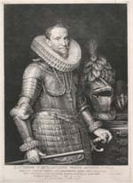
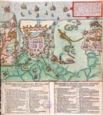
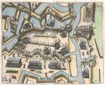
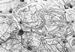
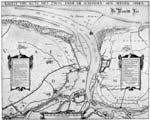
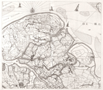

OOSTENDE VERLOREN, SLUIS GEWONNEN, 1604
Tentoonstelling in de Universiteitsbibliotheek van 12 augustus - 12
september 2004
Samenstelling: Dirk de Vries
Met bijdragen van Charles van den Heuvel, Anton van der Lem en Piet Lombaerde
Dirk de Vries (Catalogus)
 |
Prins Maurits, door Crispijn de Passe. |
|  | Ambrogio de Spinola, door J. Muller naar een schilderij van M. van Miereveld. |
 |
Het beleg van Oostende met de bestorming van 7 januari 1602. |
|  | Het beleg van Oostende in februari 1604 met de Grote Kat en de stormbrug. |
|  | Vignet op de titelpagina van Haestens’ verslag van het beleg van Oostende. |
|  | De omgeving van Sluis in 1620. Detail uit de kaart van Westelijk Staats-Vlaanderen door Jacques Horenbault uit Gent (foto Atlas van Stolk). |
 |
De omgeving van Sluis in 1622. Detail uit de kaart van Westelijk Staats-Vlaanderen door Jacques Horenbault uit Gent (foto Atlas van Stolk). |
 |
Sluis in 1621, uitgegeven te Amsterdam door François van den Hoeie. |
 |
De aanval op Sluis van 1621 uit een te Frankfurt verschenen nieuwstijding. |
 |
De vesting Sluis binnen haar nieuwe omwalling in 1622. Detail uit de herziene Caerte van t’Vrije van C.J. Visscher en H. Hondius. |
|  | Sluis met de wederzijdse fortificaties rondom het Zwin in 1627. |
|  | Het Oost-Vrije van Vlaanderen in 1656, door Jacob Mogge. |
| vorige pagina | |